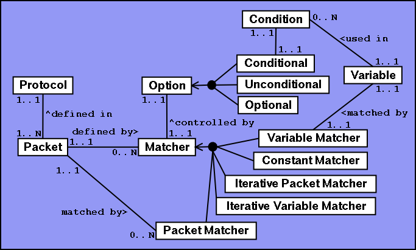
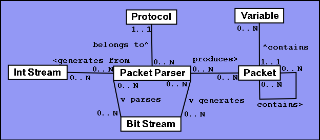
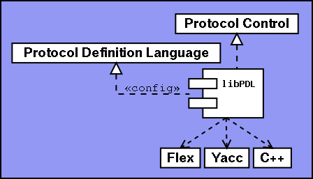
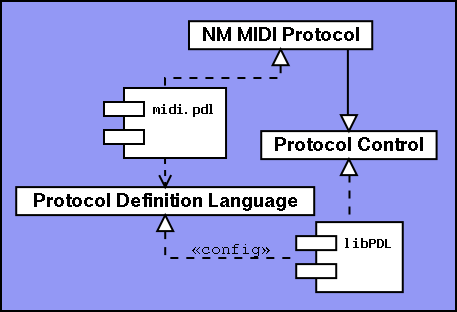

The Protocol Definition Language (PDL) and its implementation,
libPDL, is used to decode and encode messages to and from any
communication protocol that can be defined in PDL. The library was
initially written to handle the MIDI protocol used by the synthesizer
Clavia Nord Modular, for the implementation of an open source patch
editor.
The implementation libPDL reads a protocol definition from file at
instantiation and configures its internal parse structure following the
rules found in the definition file. It then has two modes of operation.
It can either parse a bit stream into a parse tree of hiearchical
packages and bound variables, or it can generate a bit stream from a
list of integers that replaces variables in the definition.

A Protocol consists of a number of Packets, each defined with a
sequence of Matchers. There are five types of Matchers, Variable
Matcher, Constant Matcher, Iterative Packet Matcher, Iterative Variable
Matcher and Packet Matcher. The application of each Matcher is
controlled by an Option, which can be either Conditional, Unconditional
or Optional.
protocol:A protocol consists of several packet definitions.
packet protocol |
;
packet:A packet has an name, a bit padding and a sequence of matchers. It is terminated with a semicolon. The packet is padded at the end with zeroes up to the next even multiplier of PAD. If B is the number of bits in the packet, then the remainder of B/PAD must be zero.
PACKET '%' PAD ':=' matchers ';'
;
matchers:
matcher matchers |
;
matcher:A matcher consists of one option and one matcher type.
matcherOption matcherType
;
matcherOption:A matcher option can be one of three things.
'#' VARIABLE '=' NUMBER '=>' |
'?' |
;
First, it can be a conditional match, depending on the value of a
variable bound earlier in the packet. At least one conditional match
defined in a packet must be satisfied for the entire packet to be
satisfied
Second, it can be an optional match that can be left unsatisfied and
still yield a correct match.
Third, it can be an unconditional match that always needs to be
satisfied.
matcherType:There are five types of matchers.
PACKET '$' IDENTIFIER |
VARIABLE '*' PACKET '$' IDENTIFIER |
VARIABLE ':' SIZE |
COUNT '*' VARIABLE ':' SIZE '/' TERMINAL |
CONSTANT ':' SIZE
;
The first matcher, the Packet Matcher, tries to match an entire sub
packet and bind it to a sub packet identifier in the packet.
The second matcher, the Iterative Packet Matcher, tries to match a
number of sub packets, depending on a variable bound earlier in the
packet. All packets need to be matched for the matcher to be satisfied.
The list of sub packets are bound to a sub packet list identifier in the
packet.
The third matcher, the Variable Matcher, tries to match a variable
value with a specified bit size. The matched value is bound to a
variable in the packet.
The fourth matcher, the Iterative Variable Matcher, tries to match
up to a constant number of variables. The matcher is satisfied either if
the terminal value is matched, or if the maximum number of values are
reached. The resulting list is bound to a variable in the packet.
The fifth matcher, the Constant Matcher, tries to match a constant
value with a specified bit size. The matcher is satisfied only if the
constant value is found.
The control language has the following vocabulary.

A Protocol contains a number of Packet Parsers. A Packet Parser can
parse a Bit Stream to generate a parse tree consisting of Packets. A
Packet Parser can also generate a Bit Stream from an Int Stream.
#include "pdl/protocol.h"
#include "pdl/packetparser.h"
#include "pdl/bitstream.h"
#include "pdl/packet.h"
Protocol* protocol = new Protocol("protocol_definition_file.pdl");
BitStream bitStream;
Packet packet;
bool success = protocol->getPacketParser("packet_name")->parse(&bitStream, &packet);
delete protocol;The protocol will try to match the bit stream to a specific packet definition found in the definition file, yielding a packet hiearchy with bound sub packets and variables.
To access the sub packets and variables, a number of access methods
are defined in the Packet class.
#include <string>
#include <list>
#include <map>
class Packet
{
public:
typedef list<Packet*> PacketList;
typedef list<int> VariableList;
typedef map<string, int> VariableMap;
typedef map<string, Packet*> PacketMap;
typedef map<string, PacketList> PacketListMap;
typedef map<string, VariableList> VariableListMap;
Packet* getPacket(string name); // Bound by Packet Matcher
PacketList getPacketList(string name); // Bound by Iterative Packet Matcher
int getVariable(string name); // Bound by Variable Matcher
VariableList getVariableList(string name); // Bound by Iterative Variable Matcher
};
#include "pdl/protocol.h"
#include "pdl/packetparser.h"
#include "pdl/bitstream.h"
#include "pdl/intstream.h"
Protocol* protocol = new Protocol("protocol_definition_file.pdl");
BitStream bitStream;
IntStream intStream;
bool success = protocol->getPacketParser("packet_name")->generate(&intStream, &bitStream);
delete protocol;
test1.pdl definition file:
Sysex % 1 :=main.cc source code:
0xf0:8 0x33:8 0:1 cc:5 slot:2 0x06:8
#cc=0x16 => ACK$data
0xf7:8
;
ACK % 1 :=
0:1 pid1:7 0:1 0x7f:7 0:1 pid2:7 0:1 checksum:7
;
#include <stdio.h>
#include "pdl/protocol.h"
#include "pdl/bitstream.h"
#include "pdl/intstream.h"
#include "pdl/packet.h"
#include "pdl/packetparser.h"
#include "pdl/tracer.h"
class TestTracer : public virtual Tracer
{
public:
void trace(string message)
{
printf("TRACE: %s\n", message.c_str());
}
};
int main(int argc, char** argv)
{
Protocol* p = new Protocol("test1.pdl");
TestTracer tracer;
p->useTracer(&tracer);
BitStream stream;
Packet packet;
stream.append(0xf0, 8);
stream.append(0x33, 8);
stream.append( 0, 1);
stream.append(0x16, 5);
stream.append( 0, 2);
stream.append(0x06, 8);
stream.append( 0, 1);
stream.append( 15, 7);
stream.append( 0, 1);
stream.append(0x7f, 7);
stream.append( 0, 1);
stream.append( 16, 7);
stream.append( 0, 1);
stream.append( 127, 7);
stream.append(0xf7, 8);
printf("!\n");
p->getPacketParser("Sysex")->parse(&stream, &packet);
printf("!\n");
printf("%d \n", packet.getVariable("cc"));
printf("%d \n", packet.getVariable("slot"));
printf("%s \n", packet.getPacket("data")->getName().c_str());
printf("%d \n", packet.getPacket("data")->getVariable("pid1"));
printf("%d \n", packet.getPacket("data")->getVariable("pid2"));
printf("%d \n", packet.getPacket("data")->getVariable("checksum"));
IntStream data;
data.append(22);
data.append(0);
data.append(16);
data.append(17);
data.append(127);
stream.setSize(0);
printf("!\n");
p->getPacketParser("Sysex")->generate(&data, &stream);
printf("!\n");
while(stream.isAvailable(8)) {
printf("%X\n", stream.getInt(8));
}
p->useTracer(0);
}

The libPDL component is configured with the Protocol Definition
Language and controlled with the Protocol Control language. It usees
Flex, Yacc and C++ for the implementation of PDL and Protocol Control.

Together with a PDL definition file (midi.pdl), a new language (NM
MIDI Protocol) is implemented.